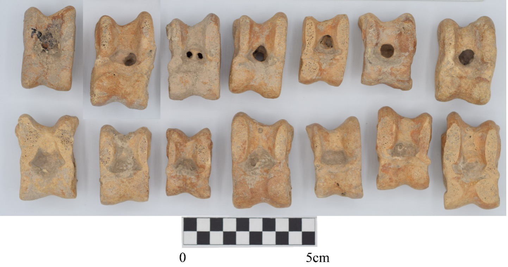

אוּרִים וְתֻמִּים – Urim and Thummim
Semantic Fields:
Utensils Cult Divination
Author(s):
Kees den Hertog, Paul Sanders
First published: 2022-08-02
Last update: 2024-05-30
Citation: Kees den Hertog, Paul Sanders, אוּרִים וְתֻמִּים – Urim and Thummim,
Semantics of Ancient Hebrew Database (https://pthu.github.io/sahd), 2022 (update: 2024)
Introduction
Grammatical type: 2x n.m. pl.
Occurrences: 7x HB (4/1/2); 0x Sir; 2x SP; 3x Qum.; 0x inscr. (Total: 12)
- Torah: Exod 28:30; Lev 8:8; Num 27:21 (only אוּרִים); Deut 33:8 (reverse order);
- Nebiim: 1 Sam 28:6 (only אוּרִים);
- Ketubim: Ezra 2:63; Neh 7:65;
- Sam Pent (additions, see A.1): Exod 28:30; 39:21 (39:21 also in 4QExod-Levf);
- Qumran: 4Q164 (4QpIsad) fr1:5; 11Q19 (11QTemplea) lviii:18-19, 20-21;
- Text doubtful: 1 Sam 14:41 (see A.2); 4Q174 fr6-7:7; 4Q299 fr69:2; 4Q376 fr1.i:3; 4Q522 fr9.ii:10.
Text Doubtful
A.1 In SP, Exod 28:30 begins with a phrase that is not found in MT: ועשית את הארים ואת התמים, ‘and you will make the Urim and the Thummim’. The plus of SP is clearly secondary. The following phrase in SP corresponds with Exod 28:30 in MT: ונתתה על חשן המשפט את הארים ואת התמים. SP recounts the execution of the instruction in an additional phrase after Exod 39:21: ויעשו את הארים ואת התמים כאשר צוה יהוה את משה, ‘and they made the Urim and the Thummim, as YHWH had commanded Moses’. Virtually the same reading is partially preserved in 4QExod-Levf: ויעש את האורים ו[את התמים...], ‘and he made the Urim and [the Thummim …]’. Since 4QExod-Levf dates form the mid-third century BCE, this plus shows a very early tendency to harmonise passages and to fill gaps (Hendel 2016:177-78, 241-42).
A.2 The Hebrew and Greek texts of 1 Sam 14:41 differ considerably. MT reads as follows:
The expression הָבָה תָמִים may here mean ‘give a clear answer’.1 The consonantal text of MT is presupposed in Pesh, Vg and TgJ. In LXX, however, the text of the verse is more extensive, with a Latin translation of the text of LXX being transmitted in the Vetus Latina (VL) and part of the manuscripts of the Vulgate (Vg); see Ancient Versions. LXX has the following text in 1 Sam 14:41:
In several other instances, the plural of Greek δῆλος, ‘clear one’, represents Hebrew אורים (see Ancient Versions). This raises the question of whether the Greek text was based on a different version of the Hebrew text including the word אורים. The word תמים is represented by ὁσιότητα, ‘holiness’, and seems to have been interpreted as an occurrence of the noun תֻּמִּים. If the Greek text was based on a Hebrew text, this Hebrew text can be reconstructed as follows (cf. 14:39):2
Many scholars regard the shorter reading of MT as the result of parablepsis, due to the twofold occurrence of the word ישראל, which led to the omission of the text between אל יהוה אלהי ישראל and ישראל הבה תמים and the skipping of one of the occurrences of ישראל.3 Other scholars, however, still defend the priority of MT.4 It seems best to take both options into account.5 Actually, even if the more extensive reading of LXX is secondary, it may still be relevant for the interpretation of the Urim and Thummim (see Exegesis).
A.3 The Urim and the Thummim are attested in 4Q164 and 11Q19 (see Exegesis), but their occurrence is less certain in other, more fragmentary non-biblical texts from Qumran. For the quotation of Deut 33:8 in 4Q175 (4QTest), see the discussion of Deut 33:8 under Exegesis.
A.4 According to Eliezer Sukenik’s early analyses, the Thanksgiving scroll (Hodayot, 1QHoda) contains three occurrences of the word אורתום, with one of the occurrences partially restored.6 The meaning of אורתום is uncertain, but already in his Hebrew editio princeps Sukenik suggested that it is the singular of אורים ותמים, ‘Urim and Thummim’.7 Sukenik’s interpretation was taken over by Dupont-Sommer (1952:74), who translated אורתום as ‘Destiny’. Others, however, regard אורתום as a compound noun consisting of the elements אוֹר, ‘light’, and תֹּום, ‘perfection’: ‘light of perfection’, or ‘perfect light’.8 According to some more recent editions, the text reads אורתים, not אורתום, which renders a connection with the Urim and Thummim even less likely. In DJD and the SBL edition of 1QHoda, אורתים is interpreted as the dual of אוֹרָה and translated as ‘early light’.9
B.1 The proposal to emend the consonantal text of Hos 3:4 and 4:5 and to read forms of תֻּמִּים instead of תְּרָפִים (3:4) and אִמֶּךָ (4:5)10 is not supported by the oldest textual witnesses. Furthermore, there is no reason to change the vocalisation of תָּמִים in Amos 5:10 into תֻּמִּים.11 It has been proposed to replace the vocalisation of the enigmatic form תּוֹמִיךְ (hiph. of unknown verb ימך?) in Ps 16:5 by תּוּמֶיךָ: תּוּמֶיךָ גּוֹרָלִי, ‘Your Thummim are my lot’.12 However, it is more convincing to interpret the form as part. m.sg. of תמך, ‘to take hold of’: אַתָּה תּוֹמֵ(י)ךְ גּוֹרָלִי, ‘you hold my lot’.13
1. Root and Comparative Material
A.1 אוּרִים is traditionally derived from √אור, ‘to be(come) light’, just like the nouns אוּר, ‘fire’, and אוֹר, ‘light’,14 although it is possible to interpret אור as a denominative verb derived from אוֹר.15 Part of the earliest translations already express a connection of אוּרִים with the verb אור or the nouns אוֹר and אוּר (see Ancient Versions). The connection with the verb אור is explicit in the Talmud, which uses the verb אור hiph., ‘to enlighten’, to explain the meaning of אוּרִים: למה נקרא שמן אורים ותומים אורים שמאירין את דבריהן, ‘why is their name called Urim and Thummim? Urim, because they enlighten their words’ (bYoma 73b); ולמה נקרא שמם אורים שהן מאירין לישראל, ‘and why is their name called Urim? Because they enlighten for Israel’ (yYoma 7, 44c). An addition in Targum Pseudo-Jonathan (TgPsJ) Exod 28:30 explains the function of the Urim and Thummim in a similar way, using the Aram. verb נהר pael, ‘to illumine’: אוריא דמנהרין מיליהון ומפרסמין טמירן דבית ישראל, ‘the Urim, which illumine their words and uncover the secrets of the house of Israel’. A phrase in 4Q164 (4QpIsad fr1:5) may already reflect the same derivation: מאירים כמשפט האורים והתומים, ‘those who enlighten according to the judgment of the Urim and the Thummim’.
A.2 Julius Wellhausen proposed to derive אוּרִים from √ארר, ‘to accurse’ (Wellhausen 1883:418-19 n. 1; cf. Van Dam 1997:95 n. 55). In the same context, he suggested that תֻּמִּים designates the contrasting aspect of the pair and connected this word with Arabic tamīma, ‘amulet’ (see B.1 below). The derivation of אוּרִים from √ארר is mentioned in several dictionaries16 and is preferred in DCH viii, with תֻּמִּים translated as ‘acquitted’.17 For the form, see Formal Characteristics.
A.3 With reference to Grimme (1901), GB, 318, mentions אוּרִים in connection with the verbs ירה I qal/hiph., ‘to throw’, and ירה III hiph., ‘to instruct’.
A.4 Hans Duhm (1926:50) interpreted אוּרִים as an ancient pass. part. form of ארה qal, ‘to pluck’: He supposed that the term אוּרִים denoted plucked off twigs that jumped out of the priest’s pouch. The derivation from ארה is mentioned as one of the options in KBL.18
A.5 תֻּמִּים is usually interpreted as the plural form of the noun תֹּם, ‘completion’, ‘perfection’ (cf. Formal Characteristics). Like the adjectives תָּם and תָּמִים (‘perfect’, ‘blameless’), the noun תֹּם is a derivative of √תמם, ‘to be(come) complete’. The interpretation of תֻּמִּים as the plural of תֹּם is found in most of the dictionaries,19 but HALOT mentions as a second option that תֻּמִּים can be regarded as ‘an independent tantum pl.’.20 DCH refers to the option of translating תֻּמִּים by ‘acquitted’ (also derived from the verb תמם), which becomes attractive if אוּרִים is translated as ‘accursed’ (see A.2).21 Part of the earliest translations already express a connection of תֻּמִּים with the verb תמם and its derivatives (see Ancient Versions). This connection is already made explicit in the Talmud, where the question למה נקרא שמן אורים ותומים, ‘why is their name called Urim and Thummim?’, is followed by an answer that uses the verb שלם hiph., ‘to fulfill’, to explain the term Thummim: תומים שמשלימין את דבריהן, ‘Thummim, because they fulfill their words’ (bYoma 73b). An addition in Targum Pseudo-Jonathan (TgPsJ) Exod 28:30 offers a similar explanation: תומיא דמשלימין בעובדיהון לכהנא רבא, ‘the Thummim, which bring fulfillment in their affairs for the high priest’. In the Jerusalem Talmud, the name Thummim is explained with the verb תמם hiph., ‘to complete, make perfect’: ותומים שהן מתימין לפניהם את הדרך שבשעה שהיו ישראל תמימין היו מכוונין להן את הדרך, ‘and Thummim, because they make perfect the road before them; as long as Israel was perfect, they were straightening the road for them’ (yYoma 7, 44c). Although many dictionaries propose to derive תֻּמִּים from תמם, this derivation remains uncertain (cf. BDB, 1070).
A.6 Werner Dommershausen considered the etymology of אוּרִים and תֻּמִּים as uncertain: ‘The words “Urim” and “Thummim” cannot be explained etymologically from the Hebrew vocabulary. Israel took them over from foreign people dwelling in the land of Canaan, but we do not know the language from which they were taken’ (Dommershausen 1977:453).
B.1 A connection of תֻּמִּים with Arabic tamāim, ‘amulets’ (sg.: tamīma), was proposed by Freytag (1830:199). Initially, Julius Wellhausen approved the proposal (1883:418-19 n. 1; cf. A.2 above), but later he began to cast doubt on it (Wellhausen 1897:143-44, 166). More recently, the connection with the Arabic word was rejected quite emphatically by Van Dam (1997:96 n. 63).
B.2 There have been several unconvincing proposals to derive אוּרִים and תֻּמִּים from Akkadian and Egyptian roots (Van Dam 1997:95-97).
2. Formal Characteristics
A.1 אוּר, ‘fire’, is interpreted as a qul form (BL, 452, §61r). The related noun אוֹר, ‘light’ (plural אוֹרִים, see Ps 136:7), may originally be just a variant form of אוּר, ‘fire’ (BL, 452, §61s), if it is not a qull form, like תֹּם (BL, 455, §61f ʹ, with reference to Akkadian urru, ‘day’). Although אֻרִים in Isa 24:15 is interpreted as the plural of אוּר, ‘fire’, it is uncertain whether אוּרִים is the plural of this noun. See Root and Comparative Material A.1.
A.2 If אוּרִים is a derivative of the verb ארר, ‘to accurse’ (see Root and Comparative Material, A.2), the form may belong to the same category as תֹּם (< תמם, plural תֻּמִּים), רֹב (< רבב, plural *רֻבִּים) and עֹז (< עזז, plural *עֻזִּים).22
A.3 תֻּמִּים is often interpreted as the plural of תֹּם, ‘completion, perfection’ (see Root and Comparative Material A.5). No other occurrences of the plural of תֹּם are attested. תֹּם (< *tumm) is a qull/qutl form derived from the verb תמם (BL, 455, §61hʹ). The vowel u and the doubling of the mem are preserved before suffixes (תֻּמִּי, תֻּמּוֹ, תֻּמָּם, etc.). Nouns of the qull/qutl type are ‘often used to form abstract forms’.23
3. Syntagmatics
A.1 In Biblical Hebrew, אוּרִים and תֻּמִּים are mostly determinate, with either a suffixed possessive pronoun (Deut 33:8) or the article (Exod 28:30; Lev 8:8; Num 27:21; cf. vocalisation בָּאוּרִים MT 1 Sam 28:6; also 4Q164 fr1:5; 11Q19 lviii:18-21). The use of the article in Exod 28:30 is quite remarkable, since the אוּרִים and תֻּמִּים had not been mentioned previously. Also in the additional phrase of SP before Exod 28:30 MT, אוּרִים and תֻּמִּים are determinate: ועשית את הארים ואת התמים, ‘and you will make the Urim and the Thummim’. In Neh 7:65 there is no article before תֻּמִּים. MT’s vocalisation of the preposition preceding אוּרִים in Neh 7:65 and אוּרִים and תֻּמִּים in Ezra 2:63 (לְ) also implies the absence of the article. In the Mishnah, the article is omitted before both nouns (mYoma 7:5, mSoṭah 9:12, mShevuʿot 2:2). For 1 Sam 14:41, see Introduction A.2.
A.2 אוּרִים and תֻּמִּים are never specified by adjectives. The nouns occur only in the absolute state.
A.3 אוּרִים and תֻּמִּים occur as nomina recta of מִשְׁפָּט, ‘judgment’, ‘decision’, in Num 27:21 (וְשָׁאַל לוֹ בְּמִשְׁפַּט הָאוּרִים), 11Q19 lviii:18-19 (ושאל לו במשפט האורים והתומים), 4Q164 (4QpIsad) fr1:5 (מאירים כמשפט האורים והתומים).
A.4 אוּרִים and תֻּמִּים occur in the nominal clause תֻּמֶּיךָ וְאוּרֶיךָ לְאִישׁ חֲסִידֶךָ, ‘Your Thummim and Your Urim (belong) to Your faithful one’ (MT Deut 33:8).
A.5 אוּרִים and תֻּמִּים are the subject of the verb היה qal, ‘to be’, in Exod 28:30. אוּרִים and תֻּמִּים are the direct object of the following verbs:
- נתן qal, ‘to give’, Exod 28:30, Lev 8:8.
- עשׂה qal, ‘to make’, Exod 28:30 (SP), 39:21 (4QExod-Levf, SP); cf. Introduction A.1.
- יהב qal, ‘to give’, 1 Sam 14:41 (source text of LXX? cf. Introduction A.2); Deut 33:8 in 4Q175 (see Exegesis).
A.6 אוּרִים and תֻּמִּים are governed by לְ in Ezra 2:63/Neh 7:65. אוּרִים is governed by a בְּ indicating the instrument in 1 Sam 28:6 (+ ענה, ‘to answer’).
4. Ancient Versions
A.1 The nouns אוּרִים and תֻּמִּים are rendered as follows in the ancient translations.
a. Septuagint (LXX) and other Greek translations (αʹ, σʹ, θʹ):24
אוּרִים
- δῆλος, ‘obvious’ (pl.):25 Num 27:21LXX; Deut 33:8LXX (order reversed); 1 Sam 28:6LXX,σʹ. Cf. Sir 33:3 ἐρώτημα δήλων, ‘inquiry of the clear ones’ (Hebrew lost); also in 1 Sam 14:41LXX, δῆλος (pl.) may represent אוּרִים; see Introduction A.2;
- δήλωσις, ‘act of making clear, explaining’ (sg.):26 Exod 28:30LXX; Lev 8:8LXX; also 1 Esd 5:40LXX (for אוּרִים Ezra 2:63/Neh 7:65);
- διδαχή, ‘teaching’ (sg.):27 Deut 33:8σʹ;
- φωτίζω, ‘to illumine, provide light’:28 Ezra 2:63LXX τοῖς φωτίζουσιν, ‘for the illuminators’ (ptc.act. pl.); Neh 7:65LXX (ὁ ἱερεὺς) φωτίσων, ‘(the priest) who will enlighten’ (ptc.act. fut. sg.);
- φωτισμός, ‘light’ (pl.):29 Exod 28:30αʹσʹθʹ; Lev 8:8αʹθʹ; Num 27:21αʹσʹθʹ; 1 Sam 28:6αʹ.
תֻּמִּים
- ἀλήθεια, ‘truth(fulness)’ (sg.):30 Exod 28:30LXX; Lev 8:8LXX; Deut 33:8LXX (order reversed); also 1 Esd 5:40LXX (for תֻּמִּים Ezra 2:63/Neh 7:65);
- ὁσιότης, ‘piety’ (sg.):31 1 Sam 14:41LXX (MT: תָמִים);
- τέλειος, ‘perfect’, ‘impeccable’ (pl.):32 Ezra 2:63LXX;
- τελειότης, ‘state of being complete and not deficient’:33 Exod 28:30αʹσʹθʹ (pl.); Deut 33:8σʹ (sg.);
- τελείωσις, ‘act of executing and completing’ (pl.):34 Lev 8:8αʹθʹ;
- no rendering: Neh 7:65.
b. Peshitta (Pesh)
אוּרִים
- ܝܕܥܬܐ (yidaʿtā), ‘knowledge’ (sg.):35 Lev 8:8;
- ܢܗܝܪܐ (nahhīrā), ‘light’ (sg.):36 Exod 28:30;
- ܢܘܗܪܐ (nūhrā), ‘light’ (sg.):37 Deut 33:8;
- ܢܘܪܐ (nūrā), ‘fire’ (sg.):38 1 Sam 28:6;
- ܫܐܠܬܐ (šèlèṯā), ‘request’, ‘inquiry’ (sg.):39 Num 27:21;
- paraphrastic in Ezra 2:63; Neh 7:65: ܟܗܢܐ ܪܒܐ ܘܢܫܐܠ ܘܢܚܙܐ, ‘a high priest who can ask and can see’.
תֻּמִּים
- ܩܘܫܬܐ (qūštā), ‘truth’ (sg.):40 Lev 8:8;
- ܫܘܡܠܝܐ (šūmlāyā), ‘fullness’, ‘perfection’ (sg.):41 Deut 33:8;
- ܫܠܡܐ (šalmā), ‘entire’, ‘perfect’, etc. (sg.):42 Exod 28:30;
- ܫܠܡܘܬܐ (šalmūṯā), ‘perfection’ (sg.):43 1 Sam 14:41 (cf. LXX);
- paraphrastic in Ezra 2:63; Neh 7:65; see under אוּרִים.
c. Targumim (Tg: O/PsJ/N/Smr/J)
אוּרִים
- אוּרַיָּא, pl. of אוּרָא: Exod 28:30O,PsJ,N; Lev 8:8O,PsJ,N; Num 27:21O,PsJ,N; Deut 33:8O,PsJ,N; 1 Sam 28:6J;
- אוֹרָיְתָה, ‘instruction’, ‘Torah’:44 Num 27:21N (first hand, later emended);
- נהיריה /נאיריה /נעיריה, ‘the luminaries’, pl. of נהיר /נאיר /נעיר:45 Exod 28:30Smr (2x); 39:21Smr; Lev 8:8Smr; Num 27:21Smr;
- נוריא, ‘the fires’, pl. of נור, ‘fire’:46 Deut 33:8Smr (with suffix: נוריך).47
תֻּמִּים
- שלמיה, ‘the perfections’, pl. of שלם:48 Exod 28:30Smr (2x); 39:21Smr; Lev 8:8Smr; Deut 33:8Smr (with suffix: שלמיך);
- תּוּמַּיָּא, ‘the integrities’, pl. of תּוּמָּא:49 Exod 28:30O,PsJ,N; Lev 8:8O,PsJ,N; Deut 33:8O,PsJ,N.
d. Vetus Latina (VL)50 and Vulgate (Vg)
אוּרִים
- demonstratio, ‘action of pointing out or showing’ (sg.):51 Exod 28:30VL;
- doctrina, ‘instruction’, ‘teaching’, ‘that which is taught’ (sg.):52 Exod 28:30Vg; Lev 8:8Vg; Deut 33:8Vg;
- doctus, ‘learned’, ‘wise’ (sg.):53 Ezra 2:63Vg; Neh 7:65Vg;
- manifestus, ‘clear’ (pl.):54 Deut 33:8VL (order reversed);
- ostensio, ‘showing, exhibiting, manifestation’ (sg.):55 Lev 8:8VL; 3 Esd 5:40Vg (= 1 Esd 5:40LXX; for אוּרִים Ezra 2:63/Neh 7:65). The word ostensio in 1 Sam 14:41VL,Vg-mss may also represent אוּרִים; see LXX (δῆλος pl.);
- sacerdos, ‘priest’ (pl.): 1 Sam 28:6Vg;
- no rendering: Num 27:21Vg.
תֻּמִּים
- eruditus, ‘learned’, ‘well-instructed’ (sg.):56 Neh 7:65Vg;
- perfectio, ‘completion’, ‘perfection’ (sg.):57 Deut 33:8Vg;
- perfectus, ‘complete’, ‘perfect’ (sg.):58 Ezra 2:63Vg;
- sanctitas, ‘sanctity’, ‘integrity’ (sg.):59 1 Sam 14:41VL,Vg-mss (LXX: ὁσιότητα, MT: תָמִים);
- veritas, ‘truth’, ‘reality’, etc. (sg.):60 Exod 28:30VL,Vg; Lev 8:8VL,Vg; Deut 33:8VL (order reversed); 3 Esd 5:40Vg (for תֻּמִּים Ezra 2:63/Neh 7:65).
A.2 Some renderings in the older layers of LXX seem to be based on guesses prompted by the context, such as δήλωσις and δῆλος pl. as translations of אוּרִים, but especially ἀλήθεια as translation of תֻּמִּים, although these renderings may reflect an early interpretation of אוּרִים as a derivative of ירה hiph., ‘to instruct’ (cf. διδαχή Deut 33:8σʹ and Root and Comparative Material A.3), and of תֻּמִּים as a derivative of אמן (Houtman 2000:494). These Greek renderings have influenced later translations; see especially VL demonstratio, manifestus, ostensio (אוּרִים); Pesh ܩܘܫܬܐ, ‘truth’, VL & Vg veritas (תֻּמִּים). Furthermore, the renderings σ´ διδαχή, ‘teaching’, Pesh ܝܕܥܬܐ, ‘knowledge’, and Vg doctrina, ‘instruction’, may also have been influenced by LXX’s translation of אוּרִים by δήλωσις and δῆλος pl. Other renderings in Pesh and Vg may also have been prompted by the context; e.g., Pesh ܫܐܠܬܐ, ‘request’, ‘inquiry’, Vg doctus, eruditus.
A.3 Especially the somewhat more recent translations of אוּרִים and תֻּמִּים reflect an interpretation of these nouns as derivatives from √אור, ‘to be(come) light’, and √תמם, ‘to be complete’, respectively (cf. Root and Comparative Material). For אוּרִים, see LXX φωτίζω, α´σ´θ´ φωτισμός, Pesh ܢܗܝܪܐ, ܢܘܗܪܐ, ܢܘܪܐ, TgSmr נהריה /נאיריה /נעיריה, נוריא. For תֻּמִּים, see LXX τέλειος, α´σ´θ´ τελειότης, τελείωσις, Pesh ܫܠܡܐ, ܫܘܡܠܝܐ, ܫܠܡܘܬܐ, TgSmr שלמיה, Vg perfectio, perfectus.
A.4 In Vg 1 Sam 28:6, the rendering of גַּם בָּאוּרִים by neque per sacerdotes, ‘nor by priests’, harmonises the expression with the following גַּם בַּנְּבִיאִם, ‘nor by the prophets’, rendered in Vg as neque per prophetas. The free translation of גַּם בָּאוּרִים took the connection of the Urim with the priesthood elsewhere in the Hebrew Bible into account.
A.5 In Ezra 2:63 and Neh 7:65, the אוּרִים and תֻּמִּים are often translated in such a way that the reference to the priestly oracle is replaced by a description of the priest’s qualities: LXX Neh 7:65: ὁ ἱερεὺς φωτίσων, ‘the priest who will enlighten’; Pesh Ezra 2:63; Neh 7:65: ܟܗܢܐ ܪܒܐ ܘܢܫܐܠ ܘܢܚܙܐ, ‘a high priest who can ask and can see’; Vg Neh 7:65: sacerdos doctus et eruditus, ‘a learned and well-instructed priest’; Vg Ezra 2:63: sacerdos doctus atque perfectus, ‘a learned and perfect priest’.
5. Lexical/Semantic Fields
A.1 The Urim and the Thummim belong to the semantic field of ‘divination’. The noun גּוֹרָל, ‘lot’, belongs to the same semantic field; cf. also פּוּר (Esth 3:7; 9:24). Lots were also kept in a container before they were cast (Dommershausen 1977:450). Unlike the גּוֹרָל, however, the Urim and Thummim relate to the inquiring of God with regard to decisions that must be made. Ada Taggar-Cohen (2002:102) rightly observes:
Some scholars have interpreted the ʾûrîm wǝtūmmîm as a lot oracle. However, the casting of lots in the ANE is different from other methods of divination, since it was not used for telling the future, or for making a decision such as whether a king should go out to war; clearly it was not an oracular practice.
6. Exegesis
6.1 Biblical Evidence
A.1 In Exod 28:30, Moses receives the instruction to put (נתן) the Urim and the Thummim (אֶת הָאוּרִים וְאֶת הַתֻּמִּים) into the ‘breastpiece of decision’ (חֹשֶׁן הַמִּשְׁפָּט). This indicates that the Urim and the Thummim were supposed to be tangible objects. The instruction with regard to the making of the חֹשֶׁן, ‘breastpiece’, had been given in 28:4, 25-29, where חֹשֶׁן already occurs twice as the nomen regens of מִשְׁפָּט (28:15: חֹשֶׁן מִשְׁפָּט; 28:29: חֹשֶׁן הַמִּשְׁפָּט). The חֹשֶׁן is described as a square pouch: זֶרֶת אָרְכּוֹ וְזֶרֶת רָחְבּוֹ, ‘a span its length and a span its width’ (28:16). Since a זֶרֶת, ‘span’, is at most 25 cm, the Urim and Thummim are supposed to have been quite small. Remarkably, MT does not indicate that the Urim and Thummim had to be made. The impression that they existed already is strengthened by the use of the article: הָאוּרִים and הַתֻּמִּים (contrast 28:4: חֹשֶׁן, ‘breastpiece’, אֵפֹד, ‘ephod’, etc.). The instruction to make the Urim and Thummim in SP is clearly secondary (Introduction A.1). Since the breastpiece had to be attached over the אֵפֹד, ‘ephod’, the Urim and Thummim would be on the heart of Aaron (עַל־לֵב אַהֲרֹן, 28:30). The end of 28:30 indicates a strong relationship between the Urim and Thummim and מִשְׁפָּט, ‘decision’, ‘judgment’: The presence of the Urim and Thummim on Aaron’s heart when he will come before YHWH (לִפְנֵי יְהוָה) implies that ‘Aaron will carry (נשׂא) the מִשְׁפָּט of the Israelites on his heart (עַל לִבּוֹ) before YHWH (לִפְנֵי יְהוָה)’. The instruction is carried out in Lev 8:8: As Aaron is consecrated to be priest of YHWH, Moses clothes him (שׂים עָלָיו) with the breastpiece (הַחֹשֶׁן) and puts (נתן) the Urim and the Thummim into the breastpiece. The repetition of the object marker את in the expression אֶת הָאוּרִים וְאֶת הַתֻּמִּים (Exod 28:30; Lev 8:8) seems to indicate that the words אוּרִים and תֻּמִּים designate two different objects or two distinct groups of objects. See also the plural form וְהָיוּ, ‘and they will be’, which follows in Exod 28:30.
A.2 Num 27:15-23 recounts the appointment of Joshua as Moses’ successor. According to Num 27:21, God tells Moses that in the future Joshua must stand before Eleazar the priest, who is Aaron’s son and successor. On behalf of him (apparently Joshua), he (apparently Eleazar) shall consult the judgment of the Urim (וְשָׁאַל לוֹ בְּמִשְׁפַּט הָאוּרִים) before YHWH (לִפְנֵי יְהוָה). It is the judgment of the Urim that indicates what the Israelites, under the leadership Joshua, must do (27:21b): עַל פִּיו יֵצְאוּ וְעַל פִּיו יָבֹאוּ הוּא וְכָל בְּנֵי יִשְׂרָאֵל אִתּוֹ וְכָל הָעֵדָה, ‘at its word they shall go out, and at its word they shall come in, he, and all the children of Israel with him, all the congregation’. The suffix ו– at the end of the expression עַל פִּיו probably refers back to מִשְׁפַּט הָאוּרִים, ‘judgment of the Urim’; cf. עַל פִּי הַגּוֹרָל, ‘according to the lot’, in Num 26:56; על פי המשפט, ‘according to the judgment’ in 11Q19 lviii:21. In Num 27:21, the Urim may be mentioned as a pars pro toto for the Urim and the Thummim (cf. 11Q19 lviii:18-21). The decisions of the Urim may concern Joshua’s leadership in general (see 27:16-17), but according to many scholars they relate, more specifically, to warfare; cf. יצא/בוא in 27:21b and in Josh 14:11; 1 Sam 18:13, 16; 29:6.
A.3 In Deut 33:8 Moses blesses Levi, the tribe of priests. According to MT he addresses God as follows: וּלְלֵוִי אָמַר תֻּמֶּיךָ וְאוּרֶיךָ לְאִישׁ חֲסִידֶךָ, ‘And about Levi he said: “Your Thummim and Your Urim (belong) to Your faithful one”.’ It is significant that the Thummim and Urim are described as originating with God: ‘Your Thummim and Your Urim’. The exceptionality of the order with the Thummim mentioned before the Urim seems to have induced LXX to represent אוּרִים (δήλους) before תֻּמִּים (ἀλήθειαν); see Ancient Versions. The text of the quotation in 4Q175 (4QTest) is more extensive than the text of MT: וללוי אמר הבו ללוי תמיך ואורך לאיש חסידך, ‘And about Levi he said: “Give to Levi your Thummim, and your Urim to your loyal one”.’
A.4 For 1 Sam 14:41, see Introduction A.2.
A.5 When Saul sees the Philistine army approaching, he consults YHWH (1 Sam 28:6, שׁאל ביהוה), but YHWH does not answer him (וְלֹא עָנָהוּ יְהוָה), neither through dreams (גַּם בַּחֲלֹמוֹת), nor through the Urim (גַּם בָּאוּרִים), nor through the prophets (גַּם בַּנְּבִיאִם). As in Num 27:21, the Urim may be mentioned as a pars pro toto for the Urim and the Thummim.
A.6 According to Ezra 2:63 and Neh 7:65, the governor said to the descendants of priestly families who were unable to produce their genealogical register that they should not eat (אכל) of the most holy things (מִקֹּדֶשׁ הַקֳּדָשִׁים) until a priest (כֹּהֵן, Neh 7:65: הַכֹּהֵן) would arise (עמד) ‘for the Urim and Thummim’ (Ezra 2:63: לְאוּרִים וּלְתֻמִּים; Neh 7:65: לְאוּרִים וְתוּמִּים). The omission of the preposition לְ before תּוּמִּים in Neh 7:65 implies a strong relationship between אוּרִים and תּוּמִּים, but does not imply that the combination אוּרִים and תּוּמִּים refers to a single object; cf. 2 Chron 9:22 (לְעֹשֶׁר וְחָכְמָה, ‘for wealth and wisdom’; cf. 1 Kgs 10:23: לְעֹשֶׁר וּלְחָכְמָה); 2 Chron 16:11 (לִיהוּדָה וְיִשְׂרָאֵל, ‘for Judah and Israel’); Ezra 1:5 (לִיהוּדָה וּבִנְיָמִן, ‘for Judah and Benjamin’).
A.7 Many exegetes61 suppose that in some texts the expression באלהים /שׁאל ביהוה, ‘to inquire of God/YHWH’, implies a role for the Urim and the Thummim, also if they are not mentioned explicitly. In addition to 1 Sam 28:6 (see A.5), the expression occurs in Judg 1:1; 18:5; 20:18, 23, 27; 1 Sam 10:22; 14:37; 22:10, 13, 15; 23:2, 4; 30:8; 2 Sam 2:1; 5:19, 23; 1 Chron 14:10, 14. One of the passages—1 Sam 30:7-8—refers to the use of an אֵפֹד, ‘ephod’, brought by the priest Abiathar, in the divination procedure. This may be significant in view of the notion that Aaron’s breastpiece (חֹשֶׁן) with the Urim and the Thummim was attached to his אֵפֹד, ‘ephod’ (Exod 28:15-30; see A.1). It is indeed possible that the reference to the ephod in 1 Sam 30:7-8 implies a role for the Urim and the Thummim, although this ephod may be not be similar to the ephod described in Exodus 28 (cf. 1 Sam 21:10). From a methodological point of view, it is questionable whether the function of the Urim and the Thummim can be described on the basis of texts in which they are not mentioned explicitly. It may be significant that 1 Sam 23:6-12, where the ephod brought by Abiathar has a similar role, is preceded by a passage in which David was able to consult YHWH (שׁאל ביהוה, 23:2, 4), although apparently the ephod was not yet present. Furthermore, 1 Sam 28:6 mentions the Urim explicitly in connection with the expression שׁאל ביהוה (see A.5), but the text refers to dreams and prophets as alternative channels of divination. This evidence suggests that it was possible to inquire of God either with or without the Urim and the Thummim, and either with or without the ephod, and either with or without a role for the priests.
6.2 Non-Biblical Dead Sea Scrolls
A.1 The Urim and Thummim are attested in at least two non-biblical texts from Qumran. Fragment 1 of 4Q164 (4QpIsad) preserves part of a pesher on Isa 54:11-12, a passage in which several kinds of gems are mentioned, 4Q164 fr1:5: […] מאירים כמשפט האורים והתומים, ‘… those who give light according to the judgment of the Urim and the Thummim’. This phrase may reflect the interpretation of אוּרִים as a derivative of √אור, ‘to be(come) light’; see Root and Comparative Material.
A.2 The section of the Temple Scroll (11Q19 = 11QTemplea) designated as the Law of the King (lvi:12-lix:21) dates from the second half of the 2nd century BCE. It is based on Deut 17:14-20 and other biblical passages. It prescribes the use of the Urim and Thummim when the king prepares for war (lviii:15-16: ואם יצא למלחמה על אויביו, ‘and if he goes out to war against his enemies’) in a section that draws on Num 27:21, a biblical verse that does not yet explicitly relate to warfare:
11Q19 lviii:18-21
והתומים על פיהו יצא ועל פיהו יבוא הוא וכול בני ישראל אשר 19
אתו לוא יצא מעצת לבו עד אשר ישאל במשפט האורים 20
והתומים והצליח בכול דרכיו אשר יצא על פי המשפט אשר 21
(continuation at top of column lix missing)
6.3 Ancient Near Eastern Parallels
During the past decades, the biblical Urim and Thummim have been compared with objects that played a role in Mesopotamian (A.1; cf. A.2) and Hittite (A.3) divination rituals.
A.1 The most usual form of divination in Mesopotamia was extispicy, the meticulous inspection of the entrails of a sacrificial animal (see, e.g., Starr 1990), but the 7th-century Assyrian text of the tablet LKA 137 (Ebeling 1953:186-87) seems to attests the practice of psephomancy, divination with the help of pebbles that could be performed rather quickly. The colophon at the bottom of the reverse side indicates that the text was copied from an older source text (Akkadian colophon text: Arbøll 2020:313). Unfortunately, several lines of the text are quite damaged, especially on the reverse side, but it is beyond doubt that the text concerns divination with the help of stones with different colours. Edward Lipiński (1970) already argued that LKA 137 ‘confirms the opinion that the ʾūrīm and tummīm of the Bible were originally two stones and gave a “yes” or “no” answer’ (1970:496). Wayne Horowitz and Victor Hurowitz (1992) translated the Assyrian text and discerned many parallels between LKA 137 and the biblical references to the Urim and Thummim, but their interpretation was heavily criticised by Irving Finkel (1995), who offered a new translation of the Assyrian text and concluded ‘that LKA 137 can have nothing to do with either Urim or Thummim’ (1995:276). Hurowitz adopted part of Finkel’s interpretations and published a new translation of the text including the colophon in COS 1:444-45 (1.127).
LKA
137 begins with an invocation of the sun god Šamaš (obv. lines 1-28),
which includes the wish that this deity will reveal his bīru, ‘inspection’,
and that the Babylonian god Bel/Marduk will reveal his dīnu, ‘decision’
(cf. BHeb. מִשְׁפָּט in
Exod 28:15, 29, 30;
Num 27:21;
Prov 16:33).
Furthermore, this section stipulates that seven
deities—apparently either their symbols or their
names—must be drawn on the ground: Sin, Šamaš, Adad, Marduk, Urašgubba, Dagan and Nabium/Nabu (lines 16-18).
Thereafter, the speaker indicates that he has finished the drawing and that he lifts up one or more stones
(line 19: anašši
N[A4.MEŠ]).
The following section, which concerns a favourable decision, includes the phrase
‘let a stone-of-desire jump up’ (line 23: NA4 erēši lišḫiṭamma),
while the final section of the invocation concerns an unfavourable decision
and includes the phrase
‘let a stone-of-no-desire jump up’ (line 27: NA4 lā erēši lišḫiṭamma).
Line 28 indicates that the procedure must be repeated up to three times:
‘Twice for a decision (dīnu), thrice for a verdict (EŠ.[BAR] = purussû).’
The front of the tablet ends with a
short rubric (line 29): ‘Incantation for a verdict (EŠ.BAR/purussû)
through alabaster and hematite.’
The stones mentioned in this rubric were probably selected because of their different colours:
the colour of alabaster is close to white, while the colour of hematite is usually close to black,
although it may range to brown and red.62
The damaged top of the reverse side of the tablet probably refers once again to the drawing of the seven gods on the ground and mentions
white stones (NA4
BABBAR.MEŠ) and
black stones ([NA4] GI6.MEŠ).
What follows is a diagram comprising seven fields, each with the name of one of the seven gods mentioned on the obverse side,
although some of these names have not been preserved entirely or have not survived at all due to the damage.
The diagram is assumed to indicate how the drawing on the ground must be performed.
Horowitz and Hurowitz (1992:109-10) pointed to a correspondence between LKA
137 and the text of 1 Sam 14:41 in LXX:
LKA
137 demands that a ‘stone-of-desire’ may jump up in the case of a favourable decision and that a ‘stone-of-no-desire’
may jump up in the case of an unfavourable decision (obv. 20-27).
The Greek text of 1 Sam 14:41 demands δῆλοι, ‘clear ones’, in
the case of one of the two alternatives, and ὁσιότης, ‘holiness’, in the case of the other (see Introduction A.2).
Horowitz and Hurowitz connected the presumably alabaster ‘stone-of-desire’ with the Urim and the presumably hematite ‘stone-of-no-desire’ with the Thummim,
arguing that alabaster—just like the Urim—expressed the notion of ‘shining’, while they suggested that hematite was
associated with ‘truth’—just like the Thummim
(1992:111-13). They made the following concluding observation (1992:114):
In LKA 137 the speaker refers to the purity of ‘the hem of my garment’ (TÚG.SÍG-ia; obv. lines 14-15). Horowitz and Hurowitz suggested that this hem ‘serves as a container in which the divinatory stones are housed or out of which they are drawn’ (1992:103) and that the biblical חֹשֶׁן הַמִּשְׁפָּט (Exod 28) and חֵיק (Prov 16:33) had the same function as this hem (1992:103, 109). According to Finkel, this suggestion is quite dubious. He argued that the drawing on the ground played a more significant role than Horowitz and Hurowitz assumed (1995:274-75): Stones with different colours were probably thrown on the drawing and the oracular decision was presumably derived from the positions where the stones came to rest (Finkel 1995:275-76; similarly Steinert 2018:258). Apparently, the stones were cast up to three times, with the result regarded as valid if each of the three attempts had the same outcome, whereas the procedure was regarded as inconclusive if the outcomes differed from each other (Finkel 1995:276; cf. Horowitz & Hurowitz 1992:105, 108). It is unclear how precisely the oracular decision was derived from the distribution of the stones over the drawing on the ground, but it stands to reason that bright stones indicated a favourable answer and that dark stones indicated an unfavourable answer (Finkel 1995:276; Lambert 2007:20). Despite Finkel’s criticism of the interpretation of LKA 137 by Horowitz and Hurowitz, he still designates the diviner to which this text refers as ‘psephomancer’ (1995:275-76), which implies that there remain some relevant correspondences between this text and the biblical descriptions of the Urim and Thummim. Both LKA 137 and the biblical Urim and Thummim texts refer to divination rituals in which small objects played a decisive role.
A.2 A Late Babylonian tamītu text from Nippur (CBS 12578) describes divination through the use of two balls of wool. The Babylonian tamītu texts concern oracular consultation of the sun god Šamaš and the storm god Adad, who are addressed as dšamaš bēl dīnim, ‘Šamaš, lord of dīnu’, and dadad bēl bīri, ‘Adad, lord of bīru’ (Lambert 2007:100–01). As in LKA 137 (above A.1), dīnu here designates the divine decision transmitted by the oracle, while bīru, ‘inspection’, denotes extispicy, the inspection of the entrails of an animal (Lambert 2007:5). In CBS 12578 Šamaš and Adad are asked to reveal whether a sick person will recover. The following passage discloses part of the procedure (lines 9-12):
The ball of white wool (piqqanni šīpāti peṣâti) in front of the ball of red wool (piqqanni nabāsi) from salt water which I have placed before your great divinity, [may they] be noted so that I may witness your reliable decision.63
According to Lambert (2007:19-20), the colour symbolism is comparable to that of LKA 137 (above A.1), with the white ball representing a positive answer to the diviner’s question and the red ball representing a negative answer:
The diviners regularly ask for a “yes” answer, so the sequence of the balls, white before red, was a visual hint. Perhaps the two balls were then put in a bag or other container, where shaken up, and somehow one came out first and its colour provided the answer.64
A.3 Anne Marie Kitz (1997) argued that the Hittite KIN oracles are important for the interpretation of the Urim and Thummim. However, her interpretation of the Hittite texts is somewhat outdated in view of the more recent analyses. Several scholarly studies describe the basic structure of the KIN oracles.65 In Hittite literature dated between the late 14th and late 13th centuries, the KIN (literally: ‘work’) is considered to be one of the means through which the gods revealed their will. Many KIN oracles concern a decision that the questioner had to take, for instance the king in the case of warfare. After the question, which is so phrased that the answer can be either ‘yes’ or ‘no’, the text expresses the wish for either a positive answer (‘Let the KIN be favourable’), or a negative answer (‘Let the KIN be unfavourable’). The following section relates to the ritual itself, performed by an ‘Old Woman’. In general, the ritual led to a clear answer, either ‘favourable’, or ‘unfavourable’. According to the texts, the standard ritual implied that a symbol ‘took’ other symbols and ‘gave’ them to yet another symbol, or put them into the latter symbol or at a specific position near it. Apparently, certain combinations of symbols were interpreted as ‘favourable’ or ‘unfavourable’, with some of the individual symbols having either a positive or a negative connotation. As the outcome of the ritual was often not immediately clear, the procedure was usually repeated once or twice. The following example of a standard oracular report concerns the king’s plan to wage war. The king hopes that the ritual will affirm his plan and he receives a positive response (KUB 5.1 ii:60-65):
… Let (the oracle) be favorable. ‘Ḫannaḫanna’ arose and took ‘well-being’, ‘the good of the land’ and ‘ZABABA’. They are placed to the right of ‘the Hittites’. Second: ‘The Hittites’ took for themselves ‘rightness’, ‘power’ and strength’, ‘the royal campaign’ and ‘well-being’. To ‘the gods’. Third: ‘The enemy’ took for himself ‘battle’, and ‘the whole soul’. They were given back to ‘the enemy’. Favorable.66
Only in a small number of reports, no outcome of the procedure is mentioned, even though the ritual was performed three times. Some of the sections describing such an unresolved oracular quest end in an extensive unwritten space, perhaps to make a later addition of the outcome possible (Orlamünde 2001:301 n. 42; Warbinek 2019b:143-47). Unfortunately, we can no longer retrieve how the ritual was performed. In a thorough study of one of the KIN texts (KUB 5.1 + 52.65), Julia Orlamünde hints at the possibility that a kind of pawns with symbolic values provided the crucial information while moving over an oracular gameboard. She argues that cup-marked stones and rocks excavated in the Hittite capital Hattuša, especially in cultic areas, may have functioned as such KIN boards, casting doubt on the older assumption that the function of the artificial cavities was to contain food and libation offerings (Orlamünde 2001:310-11). According to Livio Warbinek (2019a:162-63), Orlamünde’s hypothesis is supported by other ancient Mediterranean evidence, including the biblical Urim and Thummim. Further, Warbinek (2019a) points out that the KIN procedure was easily performed, which was a significant advantage when the questioner was in haste. The other Hittite divination methods, such as augury (interpretation of the behaviour of birds) and extispicy (interpretation of animal entrails), took more time and were usually more expensive (see already Orlamünde 2001:311).
6.4 Archaeology
A.1 Excavations in the southern Levant (Megiddo, Tell eṣ-Ṣafi/Gath, Tel Abel Beth Maacah, etc.) have uncovered some large hoards of astragali, worked bones of mainly sheep and goats, which date from Late Bronze Age or Iron Age contexts. Most of the astragali show traces of artificial abrasion, which has made them more cube shaped and allows them to be used as dice. Many of them have drill holes, some of which have been filled with metal to make them heavier. Most of the hoards have been found in cultic contexts, sometimes in an open or closed vessel. The conclusion was drawn that such astragali were cast or drawn in the context of divination rituals (Susnow et al. 2021).
 Worked astragali67
A.2 For the possibility that that cup-marked stones and rocks excavated in the Hittite capital Hattuša functioned as oracular gameboards, see Ancient Near Eastern Parallels A.3.
6.5 Plural Forms
A.1 The plural forms אוּרִים and תֻּמִּים have been explained in different ways (cf. Kitz 1997:401-02):
- אוּרִים and תֻּמִּים are true plurals, with each of these terms referring to more than one object (e.g., Noort 1977:93-94; also Robertson 1964: twenty-two objects, each with a letter of the alphabet).
- Originally, אוּרִים and תֻּמִּים are singulars with mimation that were later erroneously interpreted and vocalised as plurals (Jirku 1953; for mimation, see Waltke & O’Connor, IBHS, §9.8). Several scholars assume that each of the terms אוּרִים and תֻּמִּים designates a single object, namely either a white or a black stone (e.g., Lipiński 1970; Dommershausen 1977:453). Note that the ancient versions have both singular and plural renderings of אוּרִים as well as תֻּמִּים.
- אוּרִים and תֻּמִּים are plurales intensivi and together constitute a hendiadys designating a single object, possibly a gem (Van Dam 1997:161, 224, 230; Houtman 1990:230; 2000:496 with n. 343).
- According to Anne Marie Kitz (1997), אוּרִים and תֻּמִּים are real plurals, with the plural forms not primarily indicating multiple objects, but rather the repetition of the casting of the objects, as we know it from the Assyrian text LKA 137 and the Hittite KIN oracles (see Ancient Near Eastern Parallels A.1 and A.3).
A.2 In view of the evidence described earlier, the interpretation of אוּרִים וְתֻמִּים as a hendiadys (option 3) seems to be less convincing. The plural form וְהָיוּ in Exod 28:30 and the repetition of the object marker את before תֻּמִּים in Exod 28:30 and Lev 8:8 seem to indicate that the words אוּרִים and תֻּמִּים designate two different objects or two distinct groups of objects (see Biblical Evidence, A.1). Although this is not decisive, the text of 1 Sam 14:41 in LXX also suggests that the terms Urim and Thummim refer to two different objects or two groups of objects (Introduction A.2). Furthermore, it is harder to imagine that the outcome of the oracular quest remained unclear (see 1 Sam 28:6) if a single object was involved, while it is understandable that the use of more objects could produce an inconclusive result; cf. Ancient Near Eastern Parallels A.3. If only two objects were involved, the outcome of the procedure could be unclear if the ritual was repeated and the consecutive results differed from each other; cf. Ancient Near Eastern Parallels A.1.
7. Conclusions
A.1 The etymology of the words אוּרִים, ‘Urim’, and תֻּמִּים, ‘Thummim’, is uncertain. The traditional derivation from √אור, ‘to be(come) light’, and from √תמם, ‘to be(come) complete’, respectively, is one of the options. Although the Hebrew Bible includes several references to the Urim and Thummim, their physical nature—including their number, shape and colours—also remains unknown. The manner in which they were operated can neither be retrieved with any precision.
A.2 The Urim and Thummim must have been two or more small objects that played a crucial role in a legitimate oracular procedure that aimed at determining the will of God. The objects were entrusted to the high priest, who carried them in a square pouch (חֹשֶׁן). The high priest drew or cast the Urim and Thummim at least once when the king or another important figure wanted to know the will of God.
A.3 In view of the extra-biblical material, part of which came to light only recently, it seems legitimate to conceive the Urim and the Thummim as differently shaped or differently coloured stones or astragali.
A.4 Biblical evidence (Ezra 2:63; Neh 7:65) and post-biblical evidence (4Q164; 11Q19) indicates that even in a relatively late period divination with the Urim and the Thummim was not regarded as obsolete and that the Urim and the Thummim were still held in high esteem.
Bibliography
For the abbreviations see the List of Abbreviations.
Troels Pank Arbøll, Medicine in Ancient Assur: A Microhistorical Study of the Neo-Assyrian Healer Kiṣir-Aššur (AMD, 18), Leiden: Brill.
Richard H. Beal, ‘Seeking Divine Approval for Campaign Strategy: KUB 5.1 + KUB 52.65’, Ktema: Civilisations de l’Orient, de la Grèce et de Rome antiques 24:41–54.
The Dead Sea Scrolls: Hebrew, Aramaic and Greek Texts with English Translations, Vol 7: Temple Scroll and Related Documents (ed. James H. Charlesworth et al.), Tübingen: Mohr Siebeck; Louisville: Westminster John Knox.
Walter Dietrich, Samuel: 2. Teilband: 1 Samuel 13-26 (BKAT, 8/2), Neukirchen-Vluyn: Neukirchener.
Werner Dommershausen, ‘גּוֹרָל, gôrāl’, TDOT, rev.ed., 2:450-56.
Hans Duhm, Der Verkehr Gottes mit den Menschen im Alten Testament, Tübingen: Mohr.
André Dupont-Sommer, The Dead Sea Scrolls: A Preliminary Survey, Oxford: Blackwell.
Erich Ebeling, Literarische Keilschrifttexte aus Assur, Berlin: Akademie-Verlag.
Irving L. Finkel, ‘In Black and White: Remarks on the Assur Psephomancy Ritual’, ZA 85:271-76.
Georg Wilhelm Freytag, Lexicon arabico-latinum, vol. I, Halle: Schwetschke.
Hubert Grimme, ‘אראל und Stammverwandtes’, OLZ 4:43-45.
Ronald Hendel, Steps to a New Edition of the Hebrew Bible (TCSt, 10), Atlanta: SBL Press.
Wayne Horowitz and Victor (Avigdor) Hurowitz, ‘Urim and Thummim in Light of a Psephomancy Ritual from Assur (LKA 137)’, JANES 21:95-115.
Cornelis Houtman, ‘The Urim and Thummim: A New Suggestion’, VT 40:229-32.
Cornelis Houtman, Exodus, Volume 3: Chapters 20-40 (HCOT), Leuven: Peeters.
Anton Jirku, ‘Die Mimation in den nordwestsemitischen Sprachen und einige Bezeichnungen der altisraelitischen Mantik’, Bib 34:78-80.
Anne Marie Kitz, ‘The Plural Form of ʾÛrîm and Tummîm’, JBL 116:401-10.
Wilfred G. Lambert, Babylonian Oracle Questions (MC 13), Winona Lake, IN: Eisenbrauns.
Edward Lipiński, ‘ʾŪrīm and Tummīm’, VT 20:495-96.
Hannah Marcuson, ’World of the Old Woman’: Studies in Female Ritual Practice in Hittite Anatolia (PhD thesis, University of Chicago).
Jacob Milgrom, Leviticus 1-16 (AB, 3), New York: Doubleday.
Edward Noort, ‘Eine weitere Kurzbemerkung zu 1 Samuel xiv 41’, VT 21:112-16.
Edward Noort, Untersuchungen zum Gottesbescheid in Mari: Die “Mariprophetie” in der alttestamentlichen Forschung (AOAT, 202), Kevelaer: Butzon & Bercker; Neukirchen-Vluyn: Neukirchener.
Julia Orlamünde, ‘Überlegungen zum hethitischen KIN-Orakel’, in: Thomas Richter, Doris Prechel, and Jörg Klinger (eds.), Kulturgeschichten: Altorientalische Studien für Volkert Haas zum 65. Geburtstag, Saarbrücken: Saarbrücker, 295–311.
Edward Robertson, ‘The ʾŪrīm and Tummīm: What Were They?’, VT 14:67-74.
Eileen M. Schuller and Carol A. Newsom, The Hodayot (Thanksgiving Psalms): A Study Edition of 1QH a, Atlanta: SBL Press.
Ivan Starr, Queries to the Sungod: Divination and Politics in Sargonid Assyria (SAA, 4), Helsinki: Helsinki University Press.
Ulrike Steinert, ‘The Assur Medical Catalogue (AMC)’, in: Ulrike Steinert (ed.), Assyrian and Babylonian Scholarly Text Catalogues: Medicine, Magic and Divination (Die babylonisch-assyrische Medizin in Texten und Untersuchungen, 9), Berlin: de Gruyter, 203-91.
Eliezer Lipa Sukenik, מגילות גנוזות, 2 vols., Jerusalem: Bialik.
Eliezer Lipa Sukenik, The Dead Sea Scrolls of the Hebrew University, Jerusalem: Magness.
Matthew Susnow et al., ‘Contextualizing an Iron Age IIA Hoard of Astragali from Tel Abel Beth Maacah, Israel’, Journal of Mediterranean Archaeology 34:58-83.
Ada Taggar-Cohen, ‘The Casting of Lots among the Hittites in Light of Ancient Near Eastern Parallels’, JANESCU 29:97-103.
Arie Toeg, ‘A Textual Note on 1 Samuel xiv 41’, VT 19:493–98.
David Toshio Tsumura, The First Book of Samuel (NICOT), Grand Rapids: Eerdmans.
Cornelis van Dam, The Urim and Thummim: A Means of Revelation in Ancient Israel, Winona Lake, IN: Eisenbrauns.
Livio Warbinek, ‘An “Economical” Oracular Procedure: Evidence from the Hittite KIN Oracle’, in: Manfred Hutter and Sylvia Hutter-Braunsar (eds.), Economy of Religions in Anatolia: From the Early Second to the Middle of the First Millenium BCE: Proceedings of an International Conference in Bonn (23rd to 25th May 2018) (AOAT, 467), Münster: Ugarit-Verlag, 153-67.
Livio Warbinek, ‘Abbreviations, Lines and Clay Tablets: How to Write a KIN Oracle, How to Manage the Space’, in: Elena Devecchi, Jana Mynářová, and Gerfrid G.W. Müller (eds), Current Research in Cuneiform Palaeography 2: Proceedings of the Workshop Organised at the 64th Rencontre Assyriologique Internationale, Innsbruck 2018, Gladbeck: PeWe, 137-55.
Julius Wellhausen, Prolegomena zur Geschichte Israels (2nd ed.), Berlin: Reimer.
Julius Wellhausen, Reste arabischen Heidentums (2nd ed.), Berlin: Reimer.
Notes
Many thanks are due to Johannes C. de Moor(†) for his valuable suggestions.
-
Cf. DCH viii:644 (sub d); HALOT, 1750 (sub D). ↩
-
Barthélemy, CTAT 1:186-87; cf. Toeg 1969:493-94. ↩
-
Toeg 1969; Noort 1971; Tov, TCHB3, 224; Dietrich 2015:61, 65-66, 99-100; Hendel 2016:264. ↩
-
Van Dam 1997:197-203; Tsumura 2007:377-79. ↩
-
Cf. HALOT, 1750 (sub D). ↩
-
Sukenik 1955, Plates 38 and 52 (iv:6, 23; xviii:29). ↩
-
Sukenik 1950:43: ‘לדעתי הוא יחיד של אורים ותומים’. ↩
-
DCH i:164 s.v. אוֹר; DCH viii:644 s.v. תֻּמִּים; DCHR i:215 s.v. אוּרִים and *אֹורְתֹּום. The form אורתום is also attested in 4Q403 (4QShirShabbd) fr1.ii:1. In DJD XI, this occurrence is translated as ‘perfect light’ (279, 281, with discussion at 283). ↩
-
DJD XL, 157-58, 160-61, 261; Schuller and Newsom 2012:38-41, 64-65. See also DCHR i:215 s.v. *אֹורָתַיִם (n.f.du.): ‘early light, dawn, the time between the first light of day and the time of sunrise’; cf. DCH i:164 s.v. אוֹרָה. The recent reconstructions of 1QHoda differ considerably from Sukenik’s edition. The lines with the three occurrences of אורתים are now labelled as xii:7, 24; xxi:15. For an extensive survey of earlier interpretations, see DJD XL, 160-61. ↩
-
See BDB, 1070 s.v. תֹּם 4. For Hos 4:5, cf. also BHK3. ↩
-
See HWAT, 855 s.v. תֻּמִּים. ↩
-
See DCH ii:337 s.v. גּוֹרָל. ↩
-
See BHS, HALOT, 1751 s.v. תמך, DCH viii:645 s.v. תמך. ↩
-
HWAT, 18, treats אוּרִים as the plural of אוּר, ‘fire’. Ges18, 27, regards the interpretation as אוֹר, ‘light’ (sing, with ending ם— due to mimation), as likely. ↩
-
DCHR i:204, 206, s.v. אור I. ↩
-
GB, 19; KBL, 23, 90 s.v. ארר; HALOT, 25; DCH i:165 s.v. אוּרִים, 398 s.v. ארר. ↩
-
DCH viii:644 s.v. תֻּמִּים. ↩
-
KBL, 23, 84 s.v. ארה II. ↩
-
BDB, 1070; GB, 880; KBL, 1032; Ges18, 1442. ↩
-
HALOT, 1750-51. ↩
-
DCH viii:644-45. ↩
-
See BL, 455, §61hʹ. Cf. the forms עֻזִּי, עֻזֵּךְ, etc. ↩
-
Joüon-Muraoka, GBH, 241, §88.B.i. Cf. BL, 455, §61hʹ. ↩
-
For αʹ, σʹ, and θʹ, see FieldI, 133, 181, 259, 325, 537; Van Dam 1997:84. ↩
-
GELS, 146. ↩
-
GELS, 147. ↩
-
GELS, 164. ↩
-
GELS, 726. ↩
-
GELS, 726. ↩
-
GELS, 25. ↩
-
GELS, 508-09. ↩
-
GELS, 674. ↩
-
GELS, 674. ↩
-
GELS, 674. ↩
-
Payne Smith, CSD, 188; Sokoloff, SLB, 564 ↩
-
Payne Smith, CSD, 329; Sokoloff, SLB, 893. ↩
-
Payne Smith, CSD, 330; Sokoloff, SLB, 896. ↩
-
Payne Smith, CSD, 334; Sokoloff, SLB, 904. ↩
-
Cf. Payne Smith, CSD, 554; Sokoloff, SLB, 1497-98. ↩
-
Payne Smith, CSD, 499; Sokoloff, SLB, 1346. ↩
-
Payne Smith, CSD, 566; Sokoloff, SLB, 1529. ↩
-
Payne Smith, CSD, 582; Sokoloff, SLB, 1568. ↩
-
Sokoloff, SLB, 1568. ↩
-
Jastrow, 34. ↩
-
Tal, DSA, 506. ↩
-
Tal, DSA, 512. ↩
-
According to Van Dam (1997:88 n. 24), one manuscript reads נהיריך, ‘your luminaries’. ↩
-
Cf. Tal, DSA, 903-04. ↩
-
Jastrow, 1653-54; Dalman, ANHT, 444; both with reference to 2 Sam 15:11. ↩
-
For Vetus Latina and other Latin translations deviating from Vg, see Van Dam 1997:89-91. ↩
-
OLD, 513; similarly Lewis & Short, LD, 543. ↩
-
Lewis & Short, LD, 605; OLD, 568. ↩
-
OLD, 568. ↩
-
Lewis & Short, LD, 1108; OLD, 1073. ↩
-
Lewis & Short, LD, 1283; cf. OLD, 1275: ‘The action of exposing to view’. ↩
-
Lewis & Short, LD, 658; OLD, 619. ↩
-
Lewis & Short, LD, 1340; OLD, 1337. ↩
-
Lewis & Short, LD, 1340; OLD, 1337. ↩
-
Lewis & Short, LD, 1626; OLD, 1686. ↩
-
Lewis & Short, LD, 1974; OLD, 2037. ↩
-
E.g., Milgrom 1991:509-10; Van Dam 1997:182-90; Houtman 1990:230; 2000:496; also HALOT, 1372 s.v. שׁאל. ↩
-
Cf. Horowitz and Hurowitz 1992:102, 107; Finkel 1995:274; Lambert 2007:19. ↩
-
Lambert 2007:100-01. For the interpretation of piq(q)annu as ‘pellet’ or ‘small ball’ and the possibility that the salt water played a role in the dyeing process, see Lambert 2007:154. ↩
-
Lambert 2007:19. ↩
-
E.g., Orlamünde 2001; Marcuson 2016:100-75; Warbinek 2019b:137-39. ↩
-
We quote from the translation of KUB 5.1 by Beal (1999:48). His translation of some other Hittite KIN texts was published in COS 1:207-11 (1.79). ↩
-
Photo by Matthew Susnow, courtesy of the Tel Abel Beth Maacah Excavations. ↩